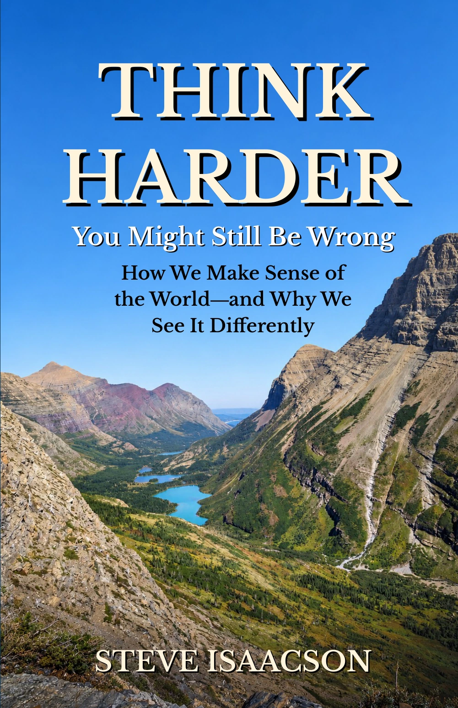

AN INVITATION TO QUESTION YOUR ASSUMPTIONS
Think
Harder.
You Might Still Be Wrong
How We Make Sense of the World—
and Why We See It Differently
An informal, argumentative tour through today’s loudest debates—and the ideas beneath them.
PAPERBACK 242 PAGES 5.5 × 8.5 INCHES

01 / REALITYWhat is real?
02 / KNOWLEDGEHow do we know?
03 / VALUEWhat should we value?
THE QUESTION BENEATH THE ARGUMENT
Same world.
Different starting points.
Why do intelligent, sincere people see the same world so differently?
Maybe the problem is not that everyone else is stupid or evil (although they might be). Maybe we keep arguing from different starting points, using the same words to mean different things, and treating our moral intuitions as self-evident.
From God and morality to abortion, racism, reparations, free speech, and taxing the rich, Steve Isaacson looks at how our assumptions shape our conclusions.
He asks readers to slow down, define their terms, weigh competing values, and test their own convictions. He takes positions—and invites you to decide whether his reasoning holds up.
The world is complicated. Human beings are fallible. Our knowledge is limited. But none of that relieves us of the responsibility to think carefully—to think harder.
FROM THE INTRODUCTION
A LOOK INSIDE
Big questions.
Real disagreements.
Start with the philosophical toolbox. Put it to work on the issues we argue about. Then turn it back on yourself.
PART IThe Structure of the WorldThe ideas beneath the ideas.
Begin with curiosity, a squirrel, and three of philosophy’s oldest questions. Explore reality, knowledge, and value before taking on the arguments built upon them.
- Where Do We Begin?
- The Parable of the Squirrel
- Intellectual By-Products
- Metaphysics: What Is Real?
- Epistemology: How Do We Know?
- Axiology: What Is Value?
PART IIPlaying With IdeasWhere the comfortable assumptions get uncomfortable.
Examine competing perspectives and trade-offs in some of our most contentious debates, with a recurring question: what makes a distinction fair, relevant, or justified?
- Who Decides? Individuals, Society, and the State
- The Price of Free Speech
- Abortion Trade-Offs
- Does God Exist?
- Where Do Morals Come From?
- Can Science Determine Human Values?
- When It’s Good to Be a Racist
- The Case Against Slavery Reparations
- The DEI Debate: What Fairness Really Means
- Sex, Gender, and the Trans Question
- Should Rich People Pay More Taxes?
PART IIIGame OverOne last look at your own convictions.
Step back from the debates and consider how a worldview can both help us understand the world and keep us from seeing it anew.
- Why Your Worldview Matters
- Afterword
- Coda
Also includes an Origin Story, Introduction, chapter endnotes, and About the Author.
A FEW PAGES TO BEGIN
The world is full
of disagreements.
From the Introduction to Think Harder
Start reading Download the PDF sampleWe argue about race and religion, taxes and gender, politics, and sometimes even pronouns.
We argue at family dinners, on social media, in classrooms, and in legislatures. We argue because we think these things matter. They shape our lives, our laws, and even our understanding of what it means to be human.
Yet something about these debates is peculiar.
Most of us are intelligent, informed, and sincere. Some of us even have a sense of humor.
Continue the IntroductionONE QUESTION TO TAKE WITH YOU
What could change
your mind?
Choose a belief you care about. What evidence or argument would make you reconsider it—even a little?
Read the closing reflectionKEEP THE CONVERSATION GOING
Bring your convictions.
They may be asked to show their work.
Think Harder: You Might Still Be Wrong
Steve Isaacson
Paperback · 242 pages
ISBN 979-8-1665-5327-0
An eight-page PDF sample with the Origin Story and Introduction.